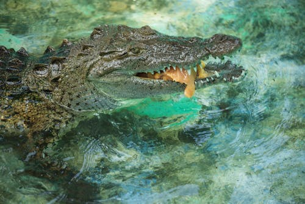

AMPHIBIANS
Frogs
Frogs are amphibians that thrive in moist environments. They require clean water for breeding and often have specialized diets that include insects.
Learn More
Toads
Toads are similar to frogs but have dry, warty skin. They thrive in various habitats and typically prefer to feed on insects and other small invertebrates.
Learn MoreSalamanders
Salamanders are often found in moist environments and are known for their regenerative abilities. They require both land and water to thrive.
Learn More
Newts
Newts are a subgroup of salamanders with aquatic larvae and terrestrial adults. They require clean water for reproduction and varied habitats for adults.
Learn MoreAxolotls
Axolotls are unique amphibians known for their regenerative capabilities. They are aquatic and require a clean, cool water environment to thrive.
Learn MoreTree Frogs
Tree frogs are known for their climbing abilities and vibrant colors. They prefer humid environments and often inhabit trees and shrubs.
Learn More
